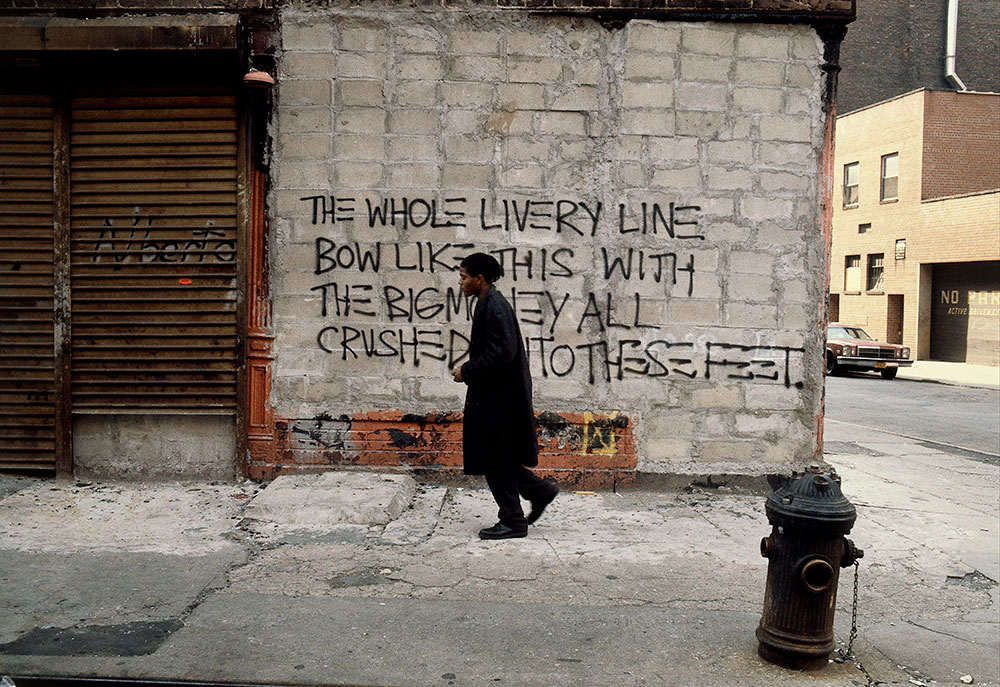
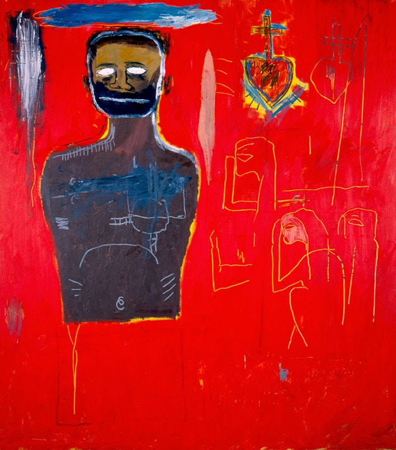
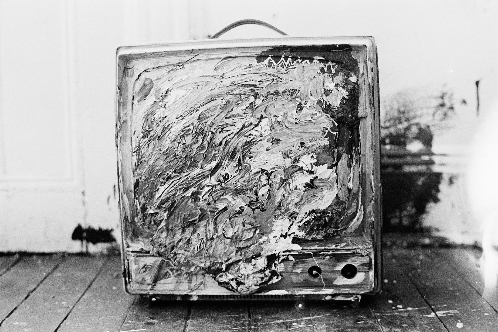
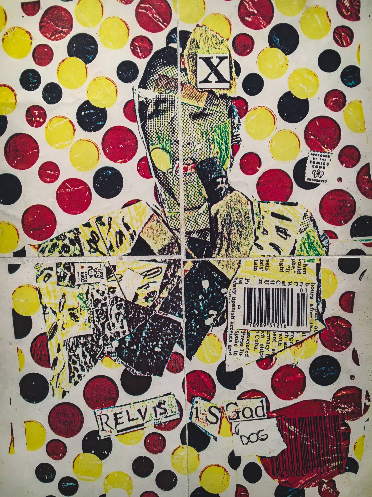
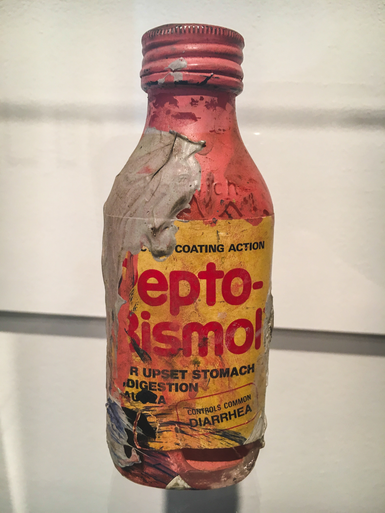
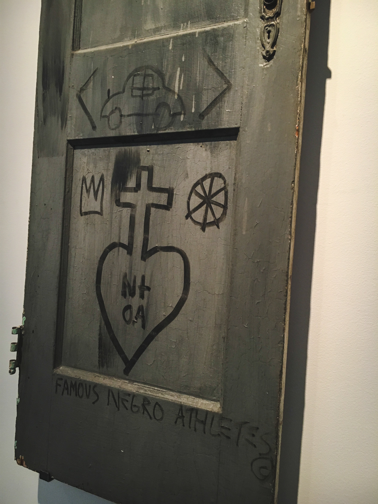

Basquiat Before Basquiat: East 12th Street, 1979-1980, at the Museum of Contemporary Art in Denver, includes the entire cache of works made by Jean-Michel Basquiat during the year he lived with his friend Alexis Adler at a small apartment in the East Village.
While living in this apartment, Basquiat’s creative impulses moved fluidly from his SAMOⒸ tags on the surrounding streets and neighborhood into a more sustained practice in their shared home. Through paintings, sculpture, works on paper, a notebook, and other ephemera, as well as Adler’s numerous photographs from this period, this exhibition explores how the context of life in New York informed and formed Basquiat’s artistic practice.

Jean-Michel Basquiat initially gained attention for his conceptually-based street art, which he would sign for the name SAMOⒸ. He wrote prolifically and covered the Lower East Side neighborhood in Manhatten with his ideas and symbols.
Basquiat Before Basquiat deepens our understanding of this artist at a vital (yet mostly unknown) moment of his career. The exhibition also attests to the artist's virtuosity in mark making on canvas and found material. These works reveal the many diversions he took as he developed his signature style.
As Adler notes, "From mid-1979 to mid-1980, I lived with Jean in three different apartments, but for most of that time in an apartment that we moved into and shared on East 12th St. This was a time before Jean had canvases to work with, so he used whatever he could get his hands on, as he was constantly creating. The derelict streets of the East Village provided his raw materials and he would bring his finds up the six flights of stairs to incorporate into his art. Jean was able to make money for paint and his share of the rent, which was $80 a month, by selling sweatshirts on the street. He knew that he was a great artist."
Untitled (Sweatshirts). c. 1979-1980. Paint on fabric.
With its combination of bold color, fragments of recognizable forms, and repeated use of symbols, Untitled (Cadmium) is one of Basquiat's great paintings. The sacred heart (a heart topped by a cross), a traditional symbol of suffering, first emerged in Basquiat's work during the period he lived with Adler, and recurs throughout his career. It even figures in a painting he made on the door to her bathroom. The fractured and stitched-up body might allude to a surgery the artist underwent as a child. During his recovery, his mother gave him a copy of Grey's Anatomy and it remained a powerful and recurrent source of ideas throughout his career.

Untitled (Cadmium). c. 1984. Oil, oil stick, and acrylic on canvas.

Painted television in the apartment. c. 1979-1980.

Untitled (Anti-Product, Relvis is God). c. 1979-1980. Color Xerographic collage and spray enamel on paper.

Untitled (Pepto-Bismol Bottle). c. 1979-1980. Acrylic on found Pepto-Bismol bottle.

Untitled (Bathroom Door). c. 1979-1980. Bathroom door.
Importantly, these early works give us a look into how Basquiat over time developed his signature practice and stlye: the use of layering and collage to bring together disparate references from popular culture, advertising, art history, comic books, and abstract expresive mark making. It's through engaging the dialouge of these elements that viewers may relate to the artist's claims about how divergent ideas intersect, alter, and reflect one's worldview in ways that still speak to the struggle of identity and art making today.
Basquiat Before Basquiat: East 12th Street, 1979-1980 is on view from February 11, 2017 to May 14, 2017. The exhibition is curated by Nora Burnett Abrams. Join us for the opening celebration on February 10, 6PM-MIDNIGHT.